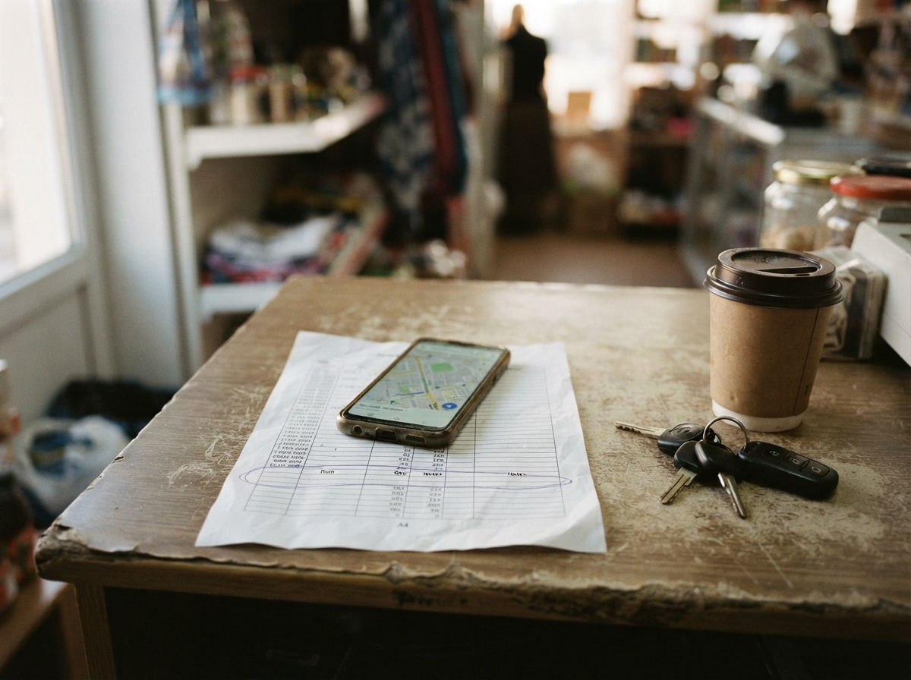

Las mismas tres reglasCuatro casos
01
Maps · la ruta
“Paso mañana”
El pin marca un lugar. El lead es una fila. Si el nombre se queda en la ruta y no baja a la hoja, el viernes no hay a quién escribirle. El canvas de Google no va a inventar esa celda. El lead se pierde en el trayecto, no en el modelo.
02
Ficha · el chat
“Si no está, no existe”
El chat puede estar lleno y la hoja, en blanco. Lo que no escribiste no pasó. El modelo nuevo no te arma la ficha si nadie anotó nombre, pedido y estado. La fila lo confirma. El chat lo niega.
03
Agenda · el hueco
“¿Tienen hora?”
Un espacio en blanco en la semana. No es “falta de IA”. Es una llamada que no se agendó. El hueco se ve. El modelo no lo llena si la agenda no es una fila que el chat pueda leer.

04
Grupo · el equipo
Tres anotando
Tres personas escribiendo el mismo lead en tres sitios. Saca la atención al cliente del grupo. Una puerta, un hilo, una fila.
Media tarde. El pin está en el mapa; la fila de la hoja sigue vacía. El canvas no tiene qué pintar.